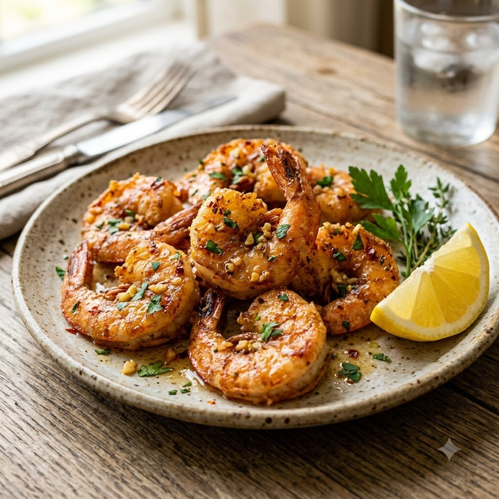

Crispy Garlic Butter Air Fryer Prawns

Crispy Garlic Butter Air Fryer Prawns
Airfryer – Grill 200°C 8 min — Serves 3
Gluten-Free • High-Protein • Everyday
🔥 Airfryer🍽 Serves 3
Prep ahead: Pat prawns completely dry before tossing — excess moisture stops them crisping.
Ingredients
- 500g prawns, peeled and deveined (tails on)
- 1 tbsp melted butter
- 1 tbsp oil
- 3 cloves garlic (lehsun), minced
- 1/2 tsp paprika
- Salt & pepper to taste
- Lemon wedges & chopped parsley, to serve
Method
1Preheat: Preheat the Airfryer to 200°C for 4 minutes before adding the food to the basket.
2Toss the prawns with melted butter, oil, garlic, paprika, salt and pepper.
3Arrange in a single layer in the basket, without overlapping.
4Air-fry at 200°C for 8 minutes, shaking halfway, until pink, opaque and lightly charred at the edges.
5Squeeze over lemon and scatter with parsley before serving.
Tip: Prawns overcook fast — check at 6 minutes if yours are on the smaller side.